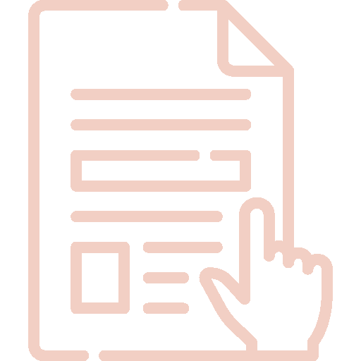
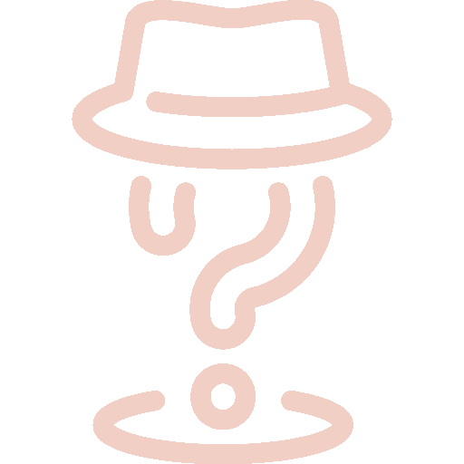

Émotions interactives
Une installation interactive qui traduit les émotions en réactions visuelles et corporelles à travers le mouvement.
2025
Conceptrice
Projet scolaire
Contexte
Ce projet a été réalisé dans le cadre d’un travail sur TouchDesigner. Il s’inscrit dans la
continuité de l’apprentissage du logiciel et constitue l’un des projets finaux présentés
lors du vernissage de fin de session.
Pour contrainte principale, l’utilisation d’une caméra comme capteur d’interaction (avec
MediaPipe) et se limiter à des TOPs et des CHOPs.
Nous avons choisi de travailler autour des émotions, en cherchant à les représenter de
manière visuelle et interactive. L’objectif était de permettre à l’utilisateur d’entrer en
relation avec différentes émotions à travers ses propres mouvements.
Quatre émotions ont été explorées : la colère, la joie, la tristesse et l’anxiété. Chaque
membre de l’équipe a développé une émotion individuellement, avant de concevoir ensemble une
dernière expérience commune.


Mon rôle
J’ai conçu l’expérience liée à la colère, ainsi que le système de navigation permettant de
passer d’une émotion à l’autre.
Pour la colère, j’ai développé une interaction basée sur l’intensité des mouvements du
corps. Une silhouette sombre est entourée d’un contour rouge, symbole de tension. Des
fissures apparaissent lors de mouvements brusques, traduisant une forme de rupture, de
violence. En levant les bras, des flammes émergent, évoquant une montée, l'intensité, tandis
que des grains visuels viennent perturber l’image pour représenter la perte de contrôle.
Logiciels utilisés
Mes apprentissages
Ce projet m’a permis d’approfondir ma pratique de TouchDesigner et de consolider ma compréhension
des interactions basées sur le corps.
Il m’a aussi permis d’explorer plus concrètement le lien entre mouvement, visuel et émotion,
ainsi que la manière dont une interaction peut influencer la perception d’un utilisateur.
J’ai également appris à concevoir une expérience "multi-états" cohérente, en intégrant plusieurs
systèmes interactifs dans un même dispositif, sous forme de layout.
Enfin, ce projet a renforcé mon intérêt pour les expériences immersives et corporelles, où
l’utilisateur devient pleinement acteur de ce qu’il vit.